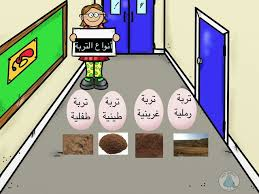
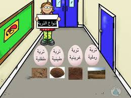

| التربة الطينية | التربة الرملية | التربة الصفراء | أنواع التربه | تكون من حبيبات الطين والطمي وقليل من حبيبات الرمل والدبال | تتكون من حبيبات الرمل وقليل من حبيبات الطين أوالطمي ومن النادر احتوائها على الدبال . | تتكون من الحصى والرمل والطين بكميات متساوية تقريبا بالإضافة إلى الكثير من الدبال | التميز |
|---|---|---|---|
| لونها أسمر داكن | لونها أصفر | رمادية اللون | خصائص التربه |
| الحبيبات صغيرة الحجم | كبيرة الحجم | خليط من الحبيبات الصغيرة والكبيرة | حجم الحبيبات |
| شديدة التماسك | ضعيفة التماسك | متوسطة التماسك | درجة تماسك التربة |
 
